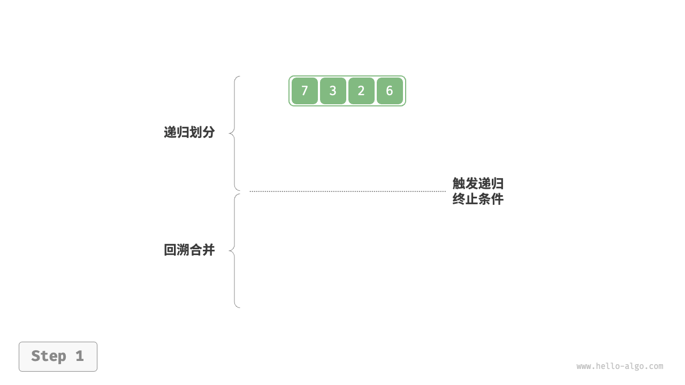
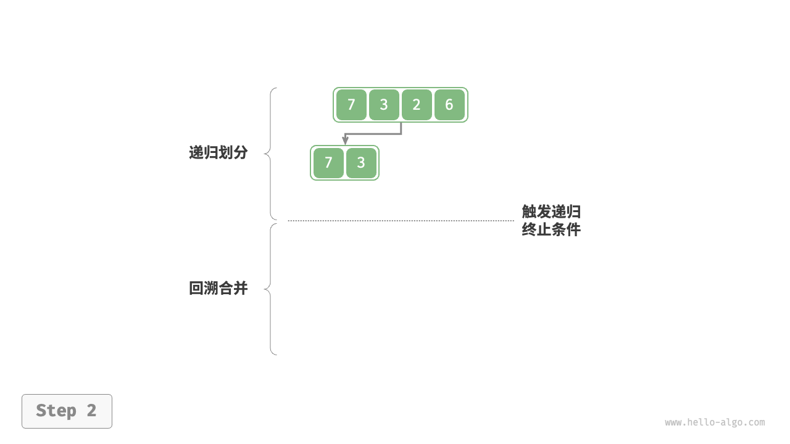
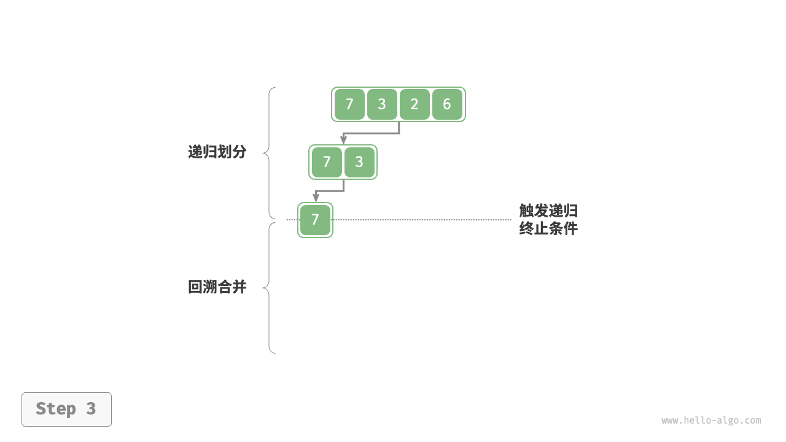
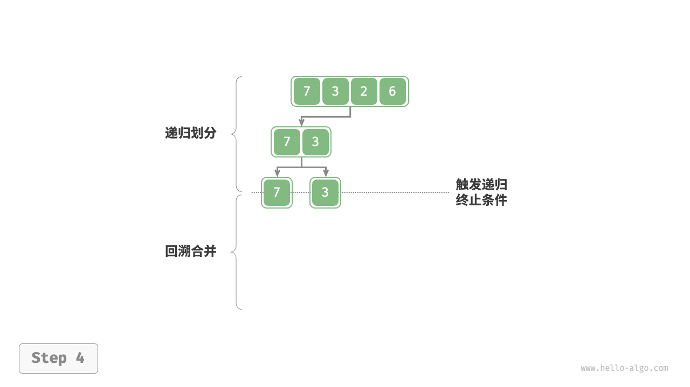
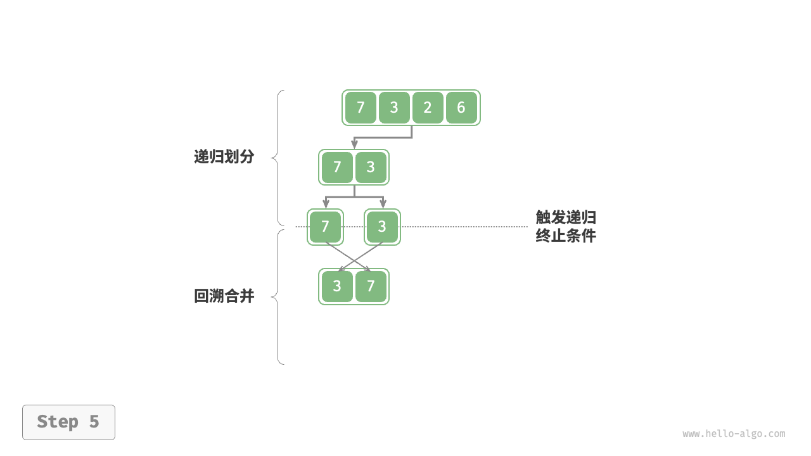
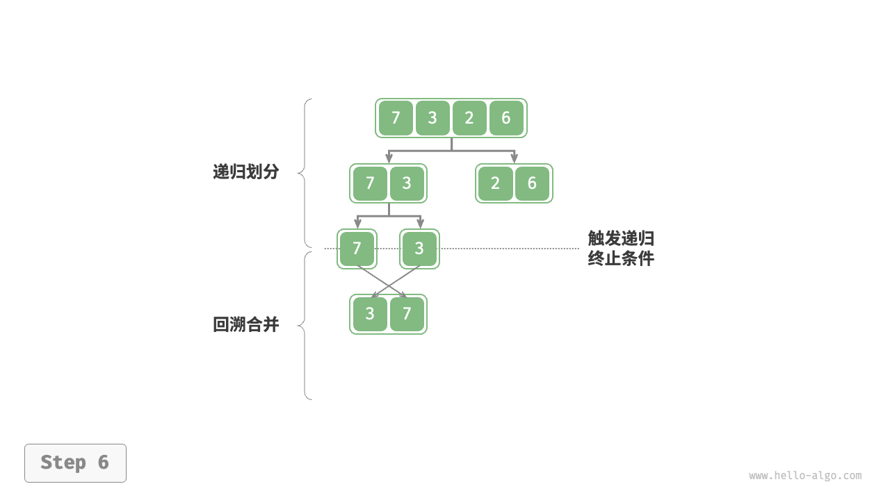
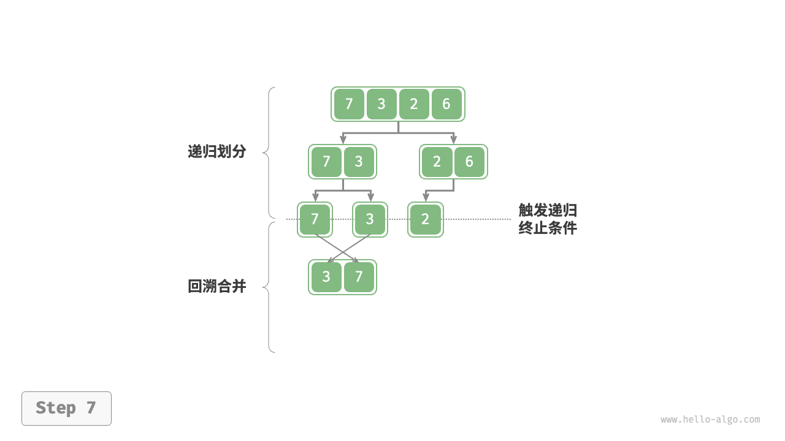
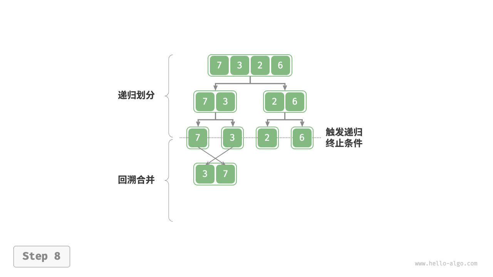
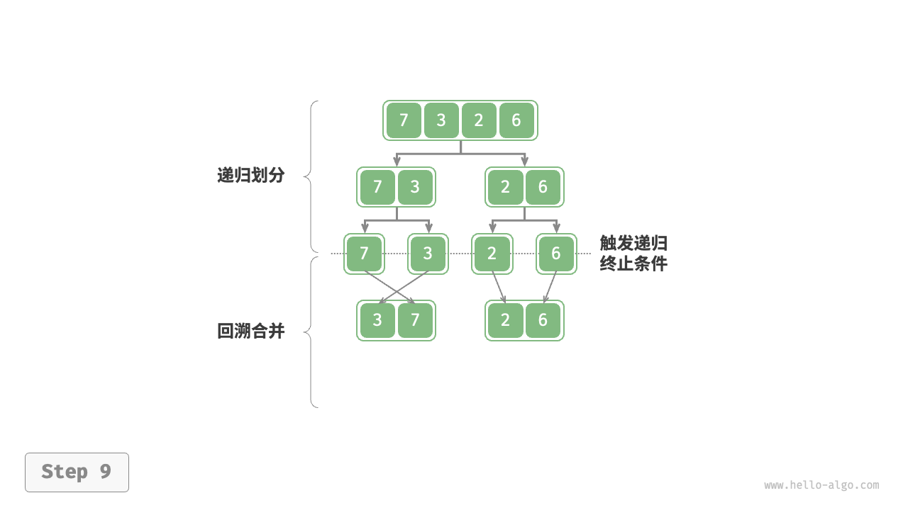
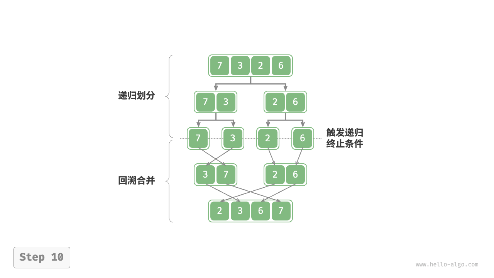

归并排序
「归并排序 merge sort」是一种基于分治策略的排序算法，包含下图所示的“划分”和“合并”阶段。
- 划分阶段：通过递归不断地将数组从中点处分开，将长数组的排序问题转换为短数组的排序问题。
- 合并阶段：当子数组长度为 1 时终止划分，开始合并，持续地将左右两个较短的有序数组合并为一个较长的有序数组，直至结束。

算法流程
如下图所示，“划分阶段”从顶至底递归地将数组从中点切分为两个子数组。
- 计算数组中点
mid，递归划分左子数组（区间[left, mid]）和右子数组（区间[mid + 1, right]）。 - 递归执行步骤
1.，直至子数组区间长度为 1 时终止。
“合并阶段”从底至顶地将左子数组和右子数组合并为一个有序数组。需要注意的是，从长度为 1 的子数组开始合并，合并阶段中的每个子数组都是有序的。
"<1>" 
"<2>" 
"<3>" 
"<4>" 
"<5>" 
"<6>" 
"<7>" 
"<8>" 
"<9>" 
"<10>" 
观察发现，归并排序与二叉树后序遍历的递归顺序是一致的。
- 后序遍历：先递归左子树，再递归右子树，最后处理根节点。
- 归并排序：先递归左子数组，再递归右子数组，最后处理合并。
归并排序的实现如以下代码所示。请注意，nums 的待合并区间为 [left, right] ，而 tmp 的对应区间为 [0, right - left] 。
- "Python"
```python
def merge(nums: list[int], left: int, mid: int, right: int):
"""合并左子数组和右子数组"""
// 左子数组区间为 [left, mid], 右子数组区间为 [mid+1, right]
// 创建一个临时数组 tmp ，用于存放合并后的结果
tmp = [0] * (right - left + 1)
// 初始化左子数组和右子数组的起始索引
i, j, k = left, mid + 1, 0
// 当左右子数组都还有元素时，进行比较并将较小的元素复制到临时数组中
while i <= mid and j <= right:
// 将左子数组和右子数组的剩余元素复制到临时数组中 while i <= mid:if nums[i] <= nums[j]: tmp[k] = nums[i] i += 1 else: tmp[k] = nums[j] j += 1 k += 1
while j <= right:tmp[k] = nums[i] i += 1 k += 1
// 将临时数组 tmp 中的元素复制回原数组 nums 的对应区间 for k in range(0, len(tmp)):tmp[k] = nums[j] j += 1 k += 1nums[left + k] = tmp[k]
def merge_sort(nums: list[int], left: int, right: int): """归并排序""" // 终止条件 if left >= right: return // 当子数组长度为 1 时终止递归 // 划分阶段 mid = (left + right) // 2 // 计算中点 merge_sort(nums, left, mid) // 递归左子数组 merge_sort(nums, mid + 1, right) // 递归右子数组 // 合并阶段 merge(nums, left, mid, right)
- "C++"
```cpp
/* 合并左子数组和右子数组 */
void merge(vector<int> &nums, int left, int mid, int right) {
// 左子数组区间为 [left, mid], 右子数组区间为 [mid+1, right]
// 创建一个临时数组 tmp ，用于存放合并后的结果
vector<int> tmp(right - left + 1);
// 初始化左子数组和右子数组的起始索引
int i = left, j = mid + 1, k = 0;
// 当左右子数组都还有元素时，进行比较并将较小的元素复制到临时数组中
while (i <= mid && j <= right) {
if (nums[i] <= nums[j])
tmp[k++] = nums[i++];
else
tmp[k++] = nums[j++];
}
// 将左子数组和右子数组的剩余元素复制到临时数组中
while (i <= mid) {
tmp[k++] = nums[i++];
}
while (j <= right) {
tmp[k++] = nums[j++];
}
// 将临时数组 tmp 中的元素复制回原数组 nums 的对应区间
for (k = 0; k < tmp.size(); k++) {
nums[left + k] = tmp[k];
}
}
/* 归并排序 */
void mergeSort(vector<int> &nums, int left, int right) {
// 终止条件
if (left >= right)
return; // 当子数组长度为 1 时终止递归
// 划分阶段
int mid = (left + right) / 2; // 计算中点
mergeSort(nums, left, mid); // 递归左子数组
mergeSort(nums, mid + 1, right); // 递归右子数组
// 合并阶段
merge(nums, left, mid, right);
}
- "Java"
```java
/ 合并左子数组和右子数组 /
void merge(int[] nums, int left, int mid, int right) {
// 左子数组区间为 [left, mid], 右子数组区间为 [mid+1, right]
// 创建一个临时数组 tmp ，用于存放合并后的结果
int[] tmp = new int[right - left + 1];
// 初始化左子数组和右子数组的起始索引
int i = left, j = mid + 1, k = 0;
// 当左右子数组都还有元素时，进行比较并将较小的元素复制到临时数组中
while (i <= mid && j <= right) {
} // 将左子数组和右子数组的剩余元素复制到临时数组中 while (i <= mid) {if (nums[i] <= nums[j]) tmp[k++] = nums[i++]; else tmp[k++] = nums[j++];
} while (j <= right) {tmp[k++] = nums[i++];
} // 将临时数组 tmp 中的元素复制回原数组 nums 的对应区间 for (k = 0; k < tmp.length; k++) {tmp[k++] = nums[j++];
} }nums[left + k] = tmp[k];
/ 归并排序 / void mergeSort(int[] nums, int left, int right) { // 终止条件 if (left >= right) return; // 当子数组长度为 1 时终止递归 // 划分阶段 int mid = (left + right) / 2; // 计算中点 mergeSort(nums, left, mid); // 递归左子数组 mergeSort(nums, mid + 1, right); // 递归右子数组 // 合并阶段 merge(nums, left, mid, right); } ```
算法特性
- 时间复杂度为 $O(n \log n)$、非自适应排序：划分产生高度为 $\log n$ 的递归树，每层合并的总操作数量为 $n$ ，因此总体时间复杂度为 $O(n \log n)$ 。
- 空间复杂度为 $O(n)$、非原地排序：递归深度为 $\log n$ ，使用 $O(\log n)$ 大小的栈帧空间。合并操作需要借助辅助数组实现，使用 $O(n)$ 大小的额外空间。
- 稳定排序：在合并过程中，相等元素的次序保持不变。
链表排序
对于链表，归并排序相较于其他排序算法具有显著优势，可以将链表排序任务的空间复杂度优化至 $O(1)$ 。
- 划分阶段：可以使用“迭代”替代“递归”来实现链表划分工作，从而省去递归使用的栈帧空间。
- 合并阶段：在链表中，节点增删操作仅需改变引用（指针）即可实现，因此合并阶段（将两个短有序链表合并为一个长有序链表）无须创建额外链表。
具体实现细节比较复杂，有兴趣的读者可以查阅相关资料进行学习。